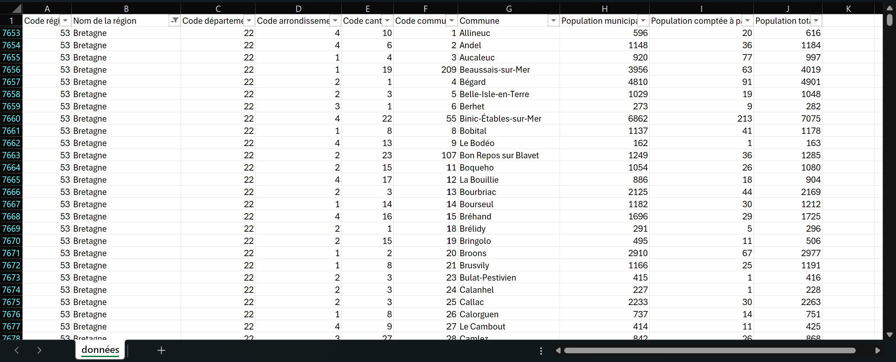
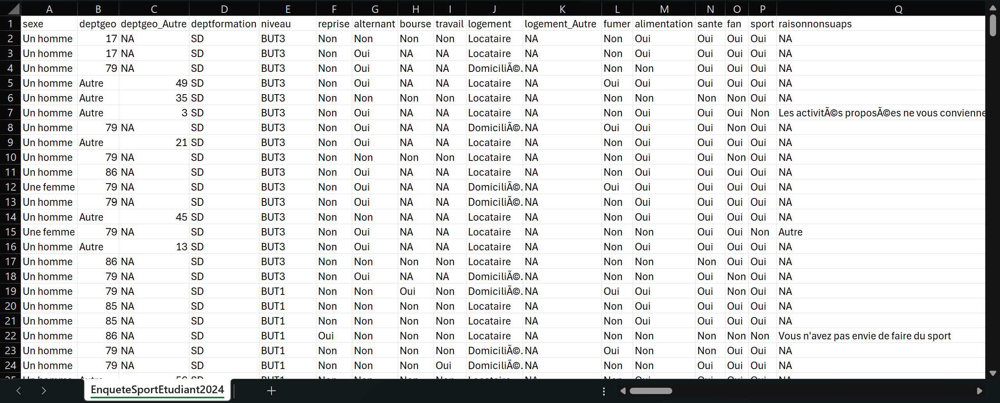
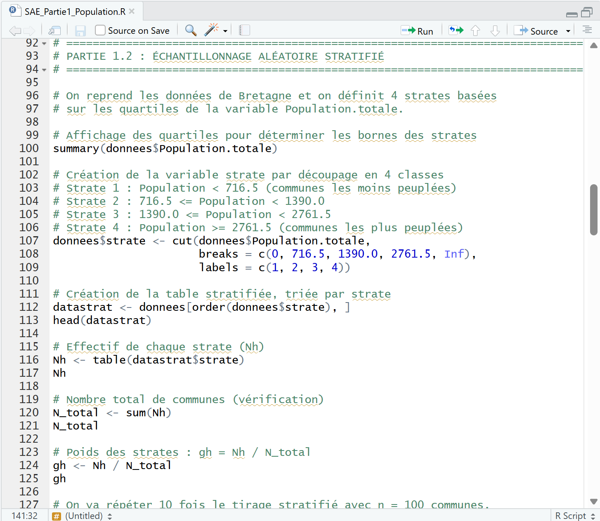
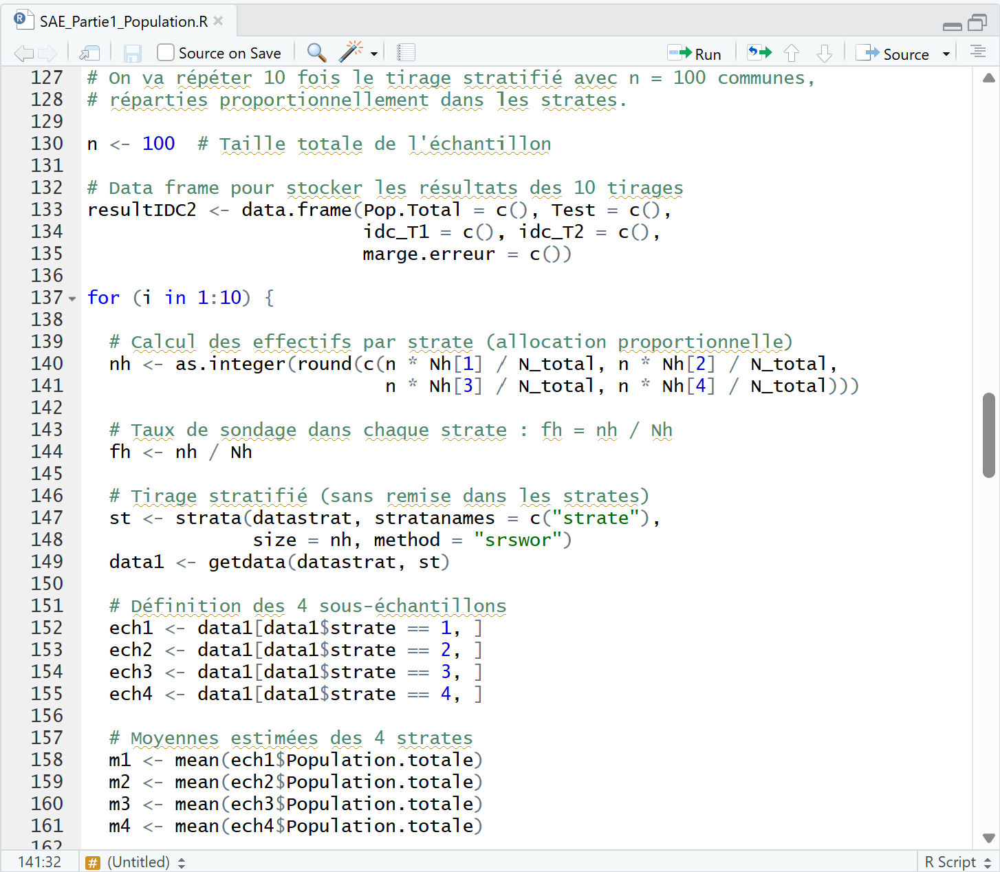
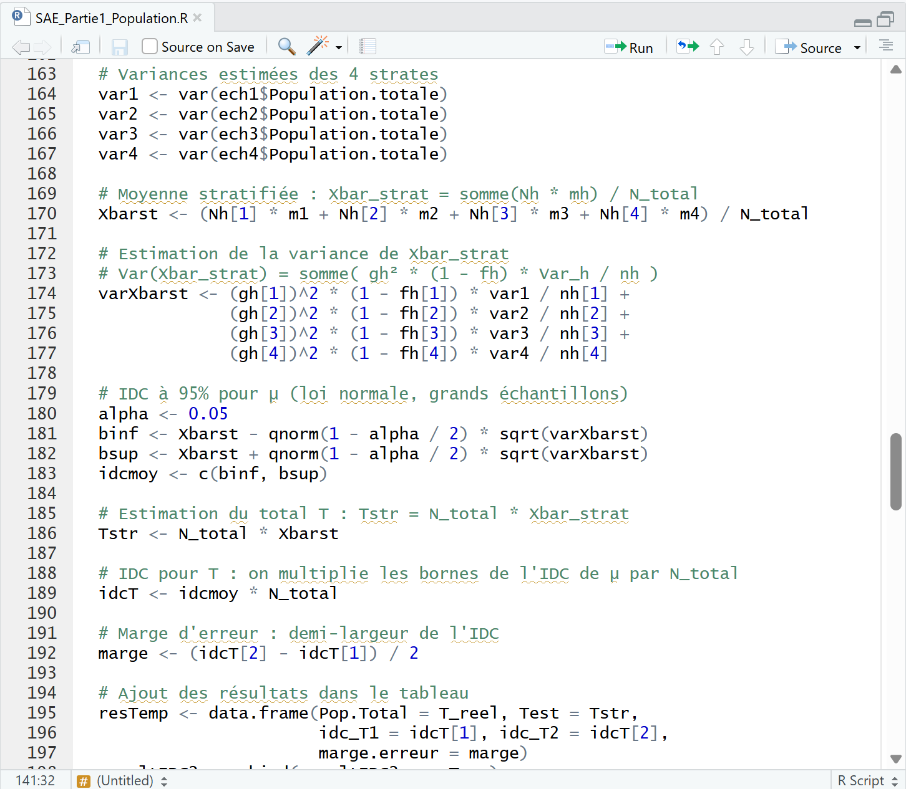
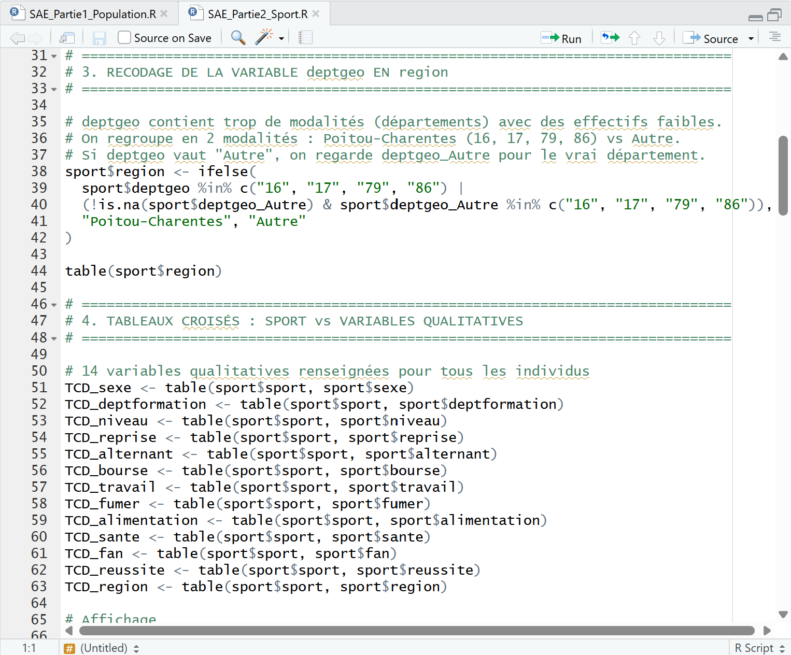
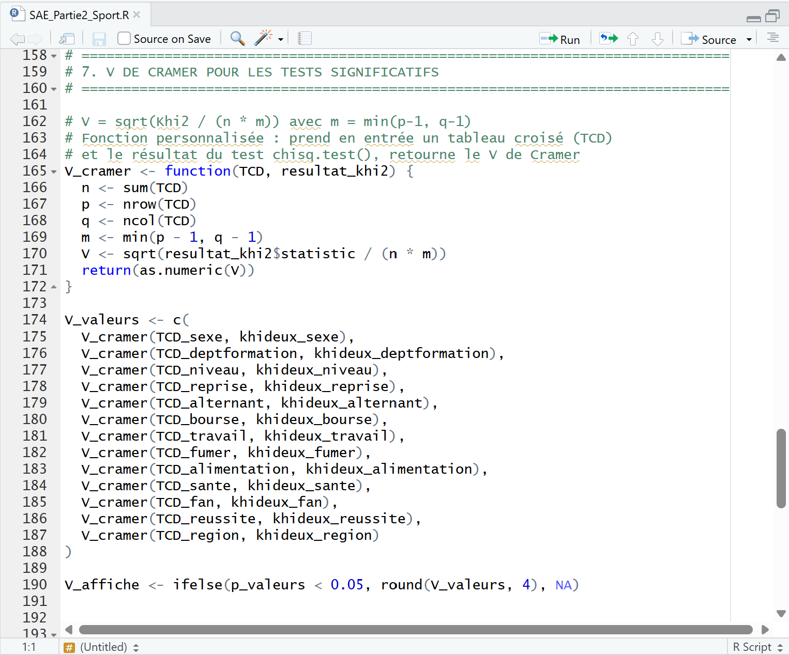

Population bretonne & enquête sportive étudiante
Mise en pratique de la statistique inférentielle à travers deux études complémentaires : estimation du nombre d’habitants en Bretagne par échantillonnage (aléatoire simple, stratifié par quartiles, par déciles) et analyse d’une enquête sur la pratique sportive de 375 étudiants (tests du khi-deux, V de Cramér). Deux scripts R, 17 pages de rapport.
Année
2025 – 2026 (S2)
Date de rendu
Mai 2026
Cadre
Binôme avec Louis
Livrables
Rapport (17 pages) + 2 scripts R (~537 lignes)
Outils
SAÉ
Échantillonnage et estimation
Cette SAÉ portait sur la mise en pratique des outils de statistique inférentielle à travers deux parties complémentaires. La première consistait à estimer le nombre total d’habitants en Bretagne à partir d’un échantillonnage de communes (données Insee, recensement 2020, 1 207 communes, 3 463 439 habitants), en comparant trois méthodes de sondage. La seconde portait sur l’analyse statistique d’une enquête réalisée auprès de 375 étudiants de l’IUT de Niort sur leur pratique sportive, en utilisant le test du khi-deux et le V de Cramér.
Travail réalisé en binôme avec Louis. L’ensemble a été codé en R, ce qui m’a fait découvrir la puissance de ce logiciel pour lequel je ne portais pas de grande attache au départ, mais qui m’a fait changer d’avis quand j’ai pu mesurer ses capacités d’analyse sur des données réelles.
Filtrage des 1 207 communes de Bretagne depuis le fichier Insee (population française). Isolement des colonnes exploitables (code département, commune, population totale). Vérification du total réel : 3 463 439 habitants.
10 tirages de 100 communes avec sample(). Estimation du total par multiplication de la moyenne par N. Résultat : estimations très variables avec des marges d’erreur élevées – la borne inférieure de l’IDC pouvait même devenir négative. Méthode peu fiable pour une population hétérogène.
Découpage en 4 strates par quartiles avec cut(). Tirage sans remise avec strata() de la librairie sampling. Moyenne stratifiée pondérée par les effectifs de chaque strate. Résultat : estimations nettement plus proches de la réalité et marges d’erreur réduites.
La strate 4 regroupait des communes de 2 762 à 226 654 habitants (forte variance interne). Passage à 10 strates par déciles. Amélioration générale (marges souvent inférieures à 500 000), mais un tirage aberrant illustre la limite d’une stratification fine avec peu de communes par strate.
Jeu de 375 individus et 76 variables. Exclusion des questions ouvertes, des variables conditionnelles, des choix multiples éclatés. Recodage de deptgeo en « region » (Poitou-Charentes vs Autre). Exclusion de logement (effectifs théoriques < 5). 13 variables retenues.
Pour chacune des 13 variables : tableau croisé avec table(), test du khi-deux avec chisq.test(), vérification des effectifs théoriques, et calcul du V de Cramér avec une fonction personnalisée. Résultat : 7 relations significatives sur 13, dont une liaison forte (fan, V = 0,45).
Rédaction d’un rapport de 17 pages détaillant chaque résultat : analyse des contributions au khi-deux, distinction entre association statistique et lien de causalité, nuances liées aux effectifs réduits pour certaines variables.







Apprentissages critiques
Ressources mobilisées
Compétences techniques
La syntaxe spécifique des data frames R (filtrage par condition, création de colonnes avec cut() et ifelse()) a nécessité un temps d’adaptation. La compréhension de la formule de la variance de la moyenne stratifiée, avec ses différents termes (poids gh, taux de sondage fh, variance par strate), a demandé un effort de mise en relation entre la théorie et l’implémentation.
La partie la plus délicate a été de comprendre pourquoi certaines variables (conditionnelles, à choix multiples éclatées, questions ouvertes) ne pouvaient pas être croisées avec « sport », et pourquoi le test du khi-deux n’a de sens que lorsque les conditions de validité sont respectées. Distinguer association et causalité n’est pas évident non plus.
Rédiger 17 pages a représenté un défi en soi. Expliquer clairement une démarche statistique, justifier chaque choix méthodologique et interpréter des résultats de manière nuancée demande un recul que l’on n’a pas forcément quand on est plongée dans le code.
Cette SAÉ m’a permis de passer de la théorie à la pratique sur des indicateurs que j’avais appris de manière théorique : intervalles de confiance, tests d’hypothèse, khi-deux, V de Cramér. J’ai appris à manipuler R pour l’analyse de données réelles, à comparer des méthodes d’échantillonnage et à mesurer l’impact de chaque choix méthodologique sur la précision. J’ai aussi développé ma capacité à nettoyer et préparer un jeu de données avant d’en tirer des conclusions fiables.
J’ai apprécié cette SAÉ car elle m’a permis de mesurer la puissance du logiciel R, pour lequel je ne portais pas de grande attache au départ. Voir les résultats concrets de simulations probabilistes sur des données réelles m’a fait changer d’avis sur cet outil. La rédaction du rapport m’a aussi beaucoup apporté : savoir interpréter des résultats statistiques et les expliquer clairement est une compétence essentielle en Science des Données.
Avec le recul, j’aurais ajouté des visualisations graphiques directement dans R (ggplot2 ou les fonctions de base) plutôt que de passer par Excel pour les graphiques du rapport. J’aurais également pu explorer d’autres méthodes d’allocation des strates (allocation de Neyman) pour voir si cela améliorait encore la précision. Mais dans l’ensemble, cette SAÉ a été un bel exercice qui m’a convaincue de l’intérêt concret des outils statistiques pour analyser le monde réel.